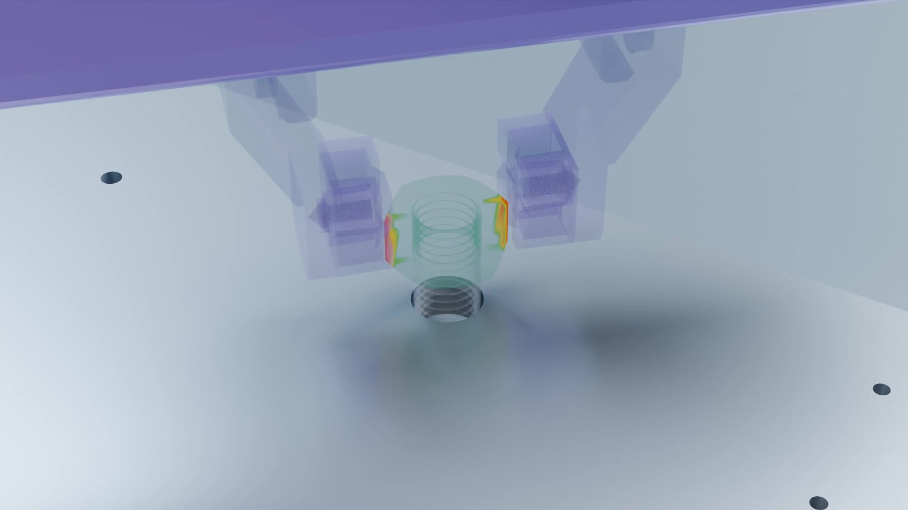
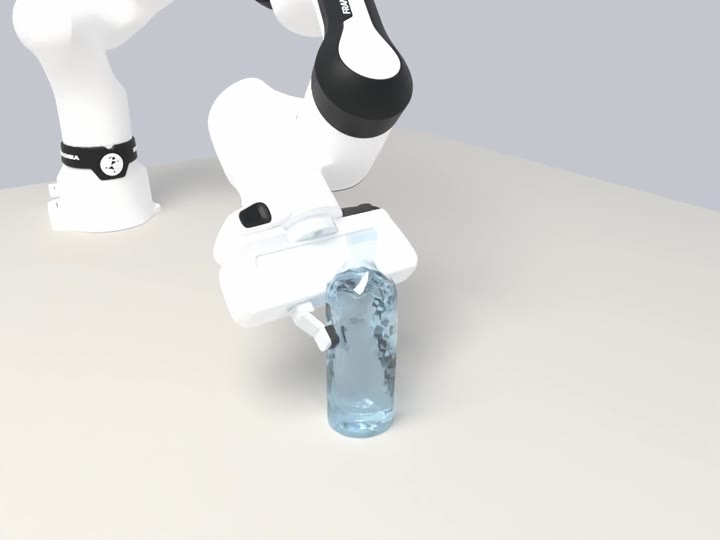
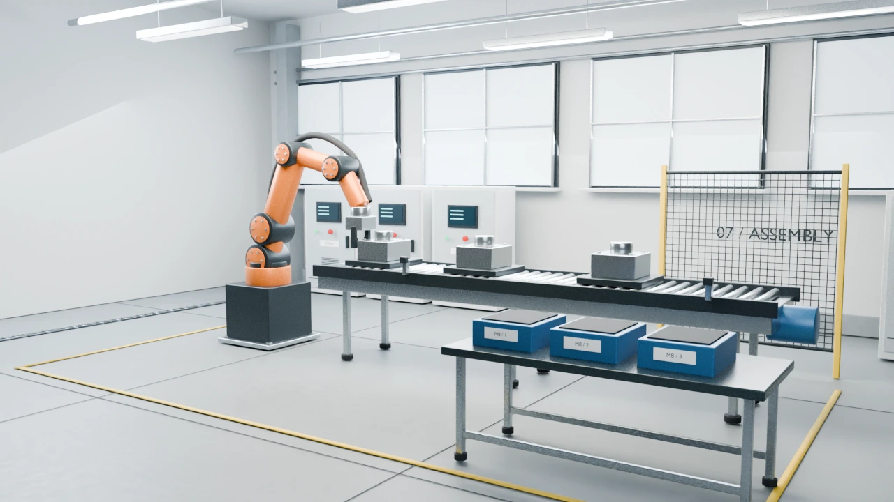

Research
围绕机器人与环境的交互，研究可观察、可操作、可验证的具身仿真。


环境构建与任务迁移
探索从第一视角视频理解场景与操作，再连接仿真环境、动作轨迹、策略和真机验证的研究路径。
Playground 中的 Agent 为流程示意，各阶段使用独立案例；同一任务的端到端转换与真机验证结果尚未展示。
了解四阶段流程本站展示用于说明研究方向与仿真现象。定量精度、任务成功率与真机迁移表现，以相应实验结果为准。
围绕机器人与环境的交互，研究可观察、可操作、可验证的具身仿真。



探索从第一视角视频理解场景与操作，再连接仿真环境、动作轨迹、策略和真机验证的研究路径。
Playground 中的 Agent 为流程示意，各阶段使用独立案例；同一任务的端到端转换与真机验证结果尚未展示。
了解四阶段流程本站展示用于说明研究方向与仿真现象。定量精度、任务成功率与真机迁移表现，以相应实验结果为准。